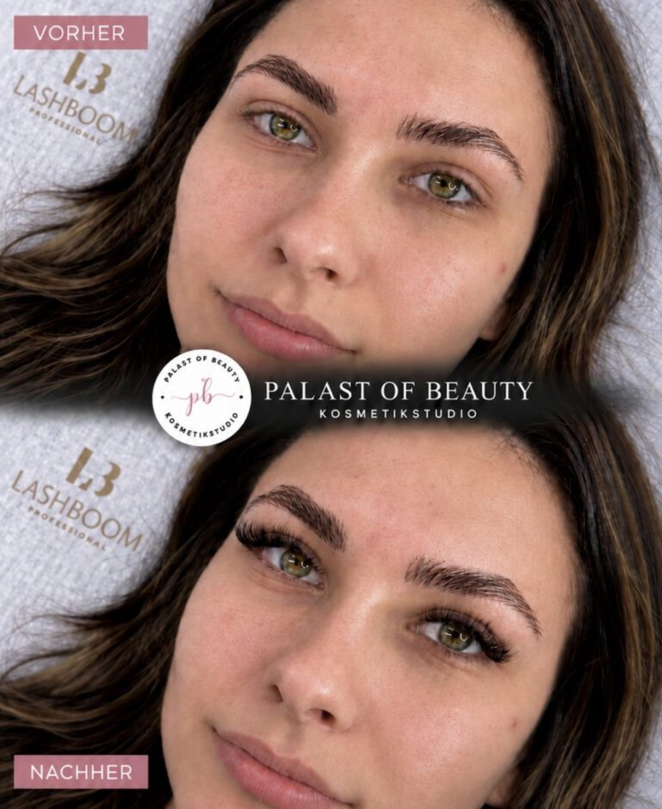
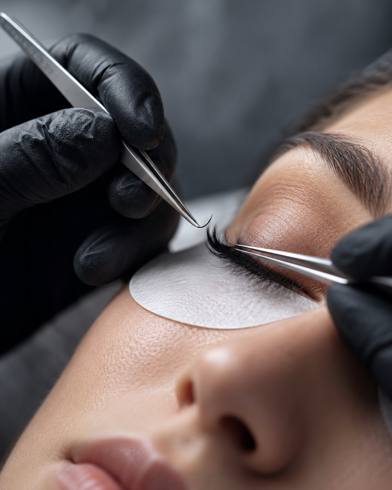
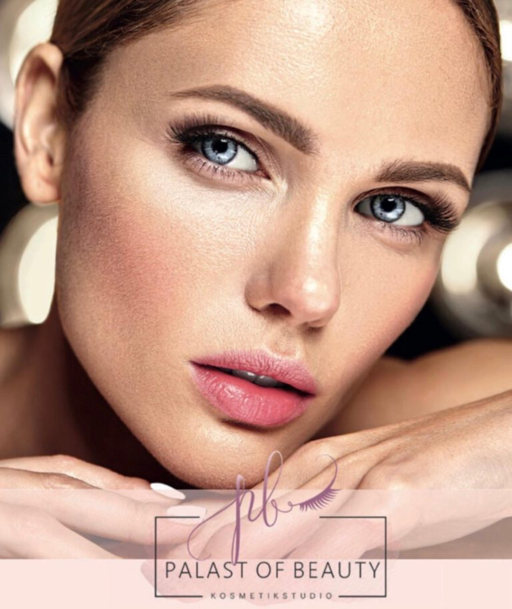
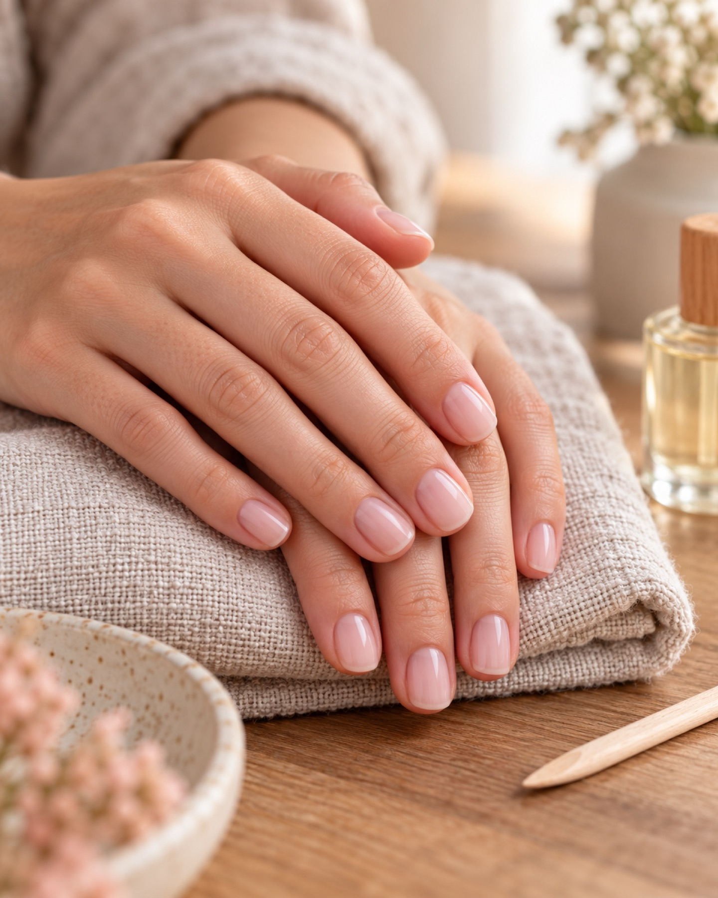
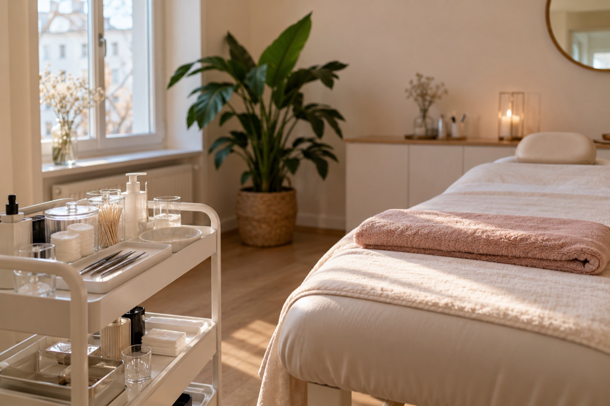

Dein Look.Dein Termin.Neudorf.
Wimpern, Brauen, Haut und Laser: Palast of Beauty, Koloniestraße 205 in Duisburg.
Termin sichern
Leistungen
Was wir machen
01Korean Lash Lifting
Geschwungene, betonte Wimpern aus eigener Kraft, inklusive Färben. Kein Aufwand am Morgen, ein offener Blick den ganzen Tag.
02Wimpernlifting
Der klassische Schwung für Ihre Naturwimpern, inklusive Färben. Auch als Kombination mit Browlifting buchbar.
03Wimpernverlängerung
Mit moderner UV-Technik: Classic 1:1, Soft Volumen, Wispy- und Hybridtechnik oder Volumentechnik 2D bis 10D. Natürlich bis ausdrucksstark.
04Permanent Make-up
Microblading, Powder Brows und Lips für klare Konturen, die bleiben.
05Dauerhafte Haarentfernung
Mit modernster 3-Wellen-Diodenlaser-Technologie (ICE). Dazu Sugaring und Waxing für die sanfte Alternative.
06Fußpflege
Professionelle Pediküre für gepflegte, gesunde Füße.
07Nageldesign
Maniküre und Nageldesign, ob elegant, natürlich oder auffällig.
08Make-up und Gesicht
Glow Make-up und Hair und Make-up für Ihren Auftritt. Dazu individuelle Gesichtsbehandlungen: Klassische Kosmetik, Aqua-Facial, Mikrodermabrasion, Microneedling und die KI-Hautanalyse.
Warum wir
Haut verstehen, dann behandeln
Seit 2009
Seit über 15 Jahren steht Palast of Beauty für hochwertige Kosmetikbehandlungen, moderne Beauty-Technologien und persönliche Beratung in Duisburg.
Persönliche Beratung
Kostenlose Beratung vor jeder Behandlung und individuelle Behandlungskonzepte, abgestimmt auf Sie.
KI-Hautanalyse
Hautalter, Feuchtigkeit, Fettgehalt, Pigmentflecken, Poren, UV-Schäden und Elastizität. Dazu eine individuelle Produktempfehlung.
Laser und IPL
Modernste Lasertechnologie für dauerhafte Haarentfernung.

Über das Studio
Dein Studio in Neudorf
Unser Ziel ist es, Ihre natürliche Schönheit zu unterstreichen und Ihre Haut nachhaltig zu verbessern. Deshalb setzen wir auf moderne Behandlungsmethoden, hochwertige Produkte und innovative Technologien wie unsere professionelle KI-Haut- und Gesichtsanalyse.
So können wir den Zustand Ihrer Haut präzise analysieren und die passende Behandlung individuell auf Sie abstimmen. Modernste Technik, persönliche Betreuung und Premium-Produkte, zertifizierte Behandlungen inklusive.
Ablauf
Dein Termin in drei Schritten
Beratung
Wir hören zu, schauen uns die Haut an und klären, was zu Ihnen passt. Kostenlos und ohne Druck.
Behandlung
Konzentriert, sauber, mit viel Ruhe. Sie liegen, wir arbeiten.
Nachpflege
Tipps für zu Hause, damit das Ergebnis hält. Den nächsten Termin planen wir bei Bedarf gleich mit.
Ergebnisse
Sieht man.



Kundenstimmen
Ich fühle mich hier von der ersten Minute an gut aufgehoben. Die Wimpern halten wunderbar und sehen trotzdem natürlich aus.
Melanie K.
Ehrliche Beratung, keine Überredung. Genau so wünsche ich mir das.
Sabine T.
Die Hautanalyse hat mir gezeigt, was meine Haut wirklich braucht. Seitdem spare ich mir viele unnötige Produkte.
Julia R.
Schulungen und Kurse
Wir geben unser Wissen weiter, mit Praxis am Modell:
- Wimpernverlängerung: Classic 1:1, Volumentechnik, UV-System
- Wimpernlifting und Korean Wimpernlifting
- Sugaring, Kosmetikbehandlung, Permanent Make-up und mehr
Fragen
Kurz erklärt
Wie bereite ich mich vor?
Kommen Sie bitte ohne Make-up im Behandlungsbereich, bei Wimpernbehandlungen ohne Wimperntusche. Sagen Sie uns vorab, wenn Sie Allergien haben oder Medikamente einnehmen.
Wie lange dauert es?
Das hängt von der Behandlung ab. Die KI-Hautanalyse dauert ca. 30 Minuten. Bei allen anderen Leistungen nennen wir Ihnen die Dauer bei der Terminvereinbarung.
Was muss ich danach beachten?
Nach jeder Behandlung bekommen Sie persönliche Pflegehinweise. Bei Wimpernverlängerungen heißt das zum Beispiel: in den ersten Stunden kein Wasser und Dampf, nicht an den Wimpern reiben.
Termin buchen und absagen?
Termine vergeben wir telefonisch unter 0203 3979818, Montag bis Freitag von 10 bis 18 Uhr. Wenn Sie verhindert sind, rufen Sie uns bitte so früh wie möglich an.
Kontakt und Anfahrt
Komm vorbei
Palast of Beauty KosmetikstudioKoloniestraße 205
47057 Duisburg
- Telefon
- 0203 3979818
- info@palast-of-beauty.de
- Terminvergabe
- Montag bis Freitag, 10 bis 18 Uhr, telefonisch